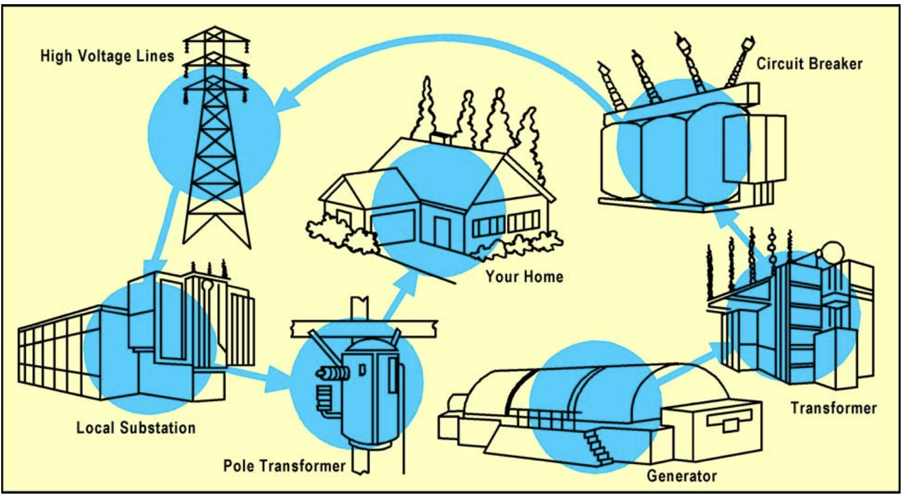

How the heck do we transmit energy?
Article Summary
Understand how energy transmission works from a fundamental perspective
How the heck do we transmit energy? [PART 3]
At a high level, electrical energy in the form of electromagnetic waves zips through the vacuum of space at the speed of light. But here on Earth, we have to shuffle energy along conductive materials such as copper wire. This physical route slows things down by a hefty amount!
TLDR we gotta push it real good.
To effectively discuss and explain energy transfer processes, it’s crucial to grasp these key concepts:
- voltage (
V = I x R): similar to pressure in a water pipe, voltage can represent how much “push” an electrical charge will have with higher amounts of voltage corresponding to faster traveling times.- current (
I): the current rate of travel energy will move through a conductive material at, with higher currents representing a higher rate of “electrical flow” - resistance (
R): the forces acting against the “electrical flow”, similar to friction - Note: typically as voltage increases, current increases as well because in most contexts the physical conduit that energy travel along will remain the same unless the material gets replaced (or worn down by long periods of time)
- current (
- watt (aka power,
P = V x I): represents the rate of “pushing”, or work being done, will occur—with higher levels of power having more “push”, a higher rate of “push”, or both.- Note: the relationship of voltage and power can also be represented as:
P = (I × R) × IP = I^2 × RI = V / R- current is directly proportionate to resistance (double one and the other halves)
- doubling the current quadruples the power (therefore power will always be sensitive to current)
- While
P = V x IandP = I^2 × Roperate in an algebraically equivalently manner:P = V x Irepresents the total power transmitted through a systemP = I^2 × Rrepresents the power lost as heat due to resistance, aka Joule heating
- Note: the relationship of voltage and power can also be represented as:
- joule (aka energy, E = integral of P over time): the total amount of energy that has flowed through the system, with higher joules representing more energy
Step to the left, now step to the right
To provide context for what qualifies as “high” vs. “low” voltage, the average American household uses 110-volt power outlets for most appliances.
Power generation facilities typically produce electricity between 10-25 kV (averging 127 times greater than what powers your toaster).
Newly generated energy often travels 50-300 miles after production, necessitating stepped-up voltage levels for efficient transmission.
Feelings of powerlessness
Transmission lines provide a conduit for energy to travel through, but also resistance. The majority of power loss will be caused by this resistance.
Here’s the fancy workaround trick engineers use to maximize energy transfer:
- Since
power = voltage * current (I), increasing thevoltagewill result in a lowercurrentifpowerremains constant - Power loss responds to
currentquadratically inpower loss = current^2 × resistance, so a decrease incurrentleads to major efficiency improvement inpower loss- example with
1,000,000 Wof power,10 Ωof resistance, and10,000 V:- using
I = P / Vto calculatecurrent,1,000,000 W / 10,000 V = 100 A - using
P = I^2 * Rto calculatepower loss,(100 A)^2 * 10 Ω = 100,000 Wof power lost to resistance
- using
- example with
1,000,000 Wof power,10 Ωof resistance, and100,000 V:- using
I = P / Vto calculatecurrent,1,000,000 W / 100,000 V = 10 A - using
P = I^2 * Rto calculatepower loss,(10 A)^2 * 10 Ω = 1,000 Wof power lost to resistance
- using
- example with
TLDR a 10x increase in voltage results in a 100x less power lost because less current means less power lost to heat!
Now step it up!

- Sustainable Sanitation and Water Management (SSWM). (n.d.). Hydropower (large-scale). SSWM. Retrieved August 21, 2024, from https://sswm.info/water-nutrient-cycle/water-use/hardwares/water-energy/hydropower-(large-scale)
Let’s follow the flow of energy as it moves from generator to home appliance:
- Generator: Produces energy, usually via induction (such as at a hydroelectric dam), converting mechanical energy into electrical energy at ~10-25 kV
- Step-up transformer: Increases voltage to ~250-500 kV, depending on the distance to the next step
- Circuit breaker: Protects the entire electrical system by ensuring interruptions in flow from one section don’t cause faults or overloads in another
- High voltage lines: Provide the conduit for electricity to travel over long distances
- Step-down transformer (local substation): Decreases voltage to ~5-50 kV range for transfer in local areas
- Step-down transformer (pole transformer): Further decreases voltage to the standard 120 or 240 volts used in residential outlets
Next up to read
Now that the fundamental mechanics of energy transmission has been covered, lets learn a bit more about how new energy sources get added to the grid—and whom wields the power!